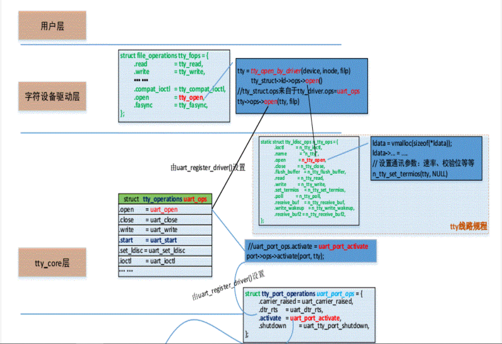

对tty设备的打开操作，经过虚拟文件系统VFS层，字符设备驱动层，最后到达cdev的tty_open函数，也是被调用的tty子系统的第一个函数。
分析tty_open函数，为了方便分析，只列出主要部分：
static int tty_open(struct inode *inode, struct file *filp)
{
struct tty_struct *tty = NULL;
int noctty, retval;
struct tty_driver *driver;
int index;
dev_t device = inode->i_rdev;
unsigned saved_flags = filp->f_flags;
nonseekable_open(inode, filp);
retry_open:
noctty = filp->f_flags & O_NOCTTY;
index = -1;
retval = 0;
driver = get_tty_driver(device, &index);
tty = tty_init_dev(driver, index, 0);
retval = tty_add_file(tty, filp);
check_tty_count(tty, "tty_open");
if (tty->driver->type == TTY_DRIVER_TYPE_PTY &&
tty->driver->subtype == PTY_TYPE_MASTER)
noctty = 1;
if (tty->ops->open)
retval = tty->ops->open(tty, filp);
}
函数分析：
- 通过inode->i_rdev域得到设备号，调用函数get_tty_driver，该函数会遍历tty_driver链表，通过设备号找到对应的tty_driver的地址，并返回其index。
- 调用函数tty_init_dev，此函数需要分析:
struct tty_struct *tty_init_dev(struct tty_driver *driver, int idx,
int first_ok)
{
struct tty_struct *tty;
int retval;
tty = alloc_tty_struct();/*函数alloc_tty_struct只是为tty_struct分配内存*/
initialize_tty_struct(tty, driver, idx);
tty_ldisc_setup(tty, tty->link);
return tty;
}
函数initialize_tty_struct将初始化tty的一些参数。
调用tty_ldisc_init(tty)初始化tty_struct结构的ldisc的ops域，对于N_TTY(0)，其ops域指向此结构：
struct tty_ldisc_ops tty_ldisc_N_TTY = {
.magic = TTY_LDISC_MAGIC,
.name = "n_tty",
.open = n_tty_open,
.close = n_tty_close,
.flush_buffer = n_tty_flush_buffer,
.chars_in_buffer = n_tty_chars_in_buffer,
.read = n_tty_read,
.write = n_tty_write,
.ioctl = n_tty_ioctl,
.set_termios = n_tty_set_termios,
.poll = n_tty_poll,
.receive_buf = n_tty_receive_buf,
.write_wakeup = n_tty_write_wakeup
};
调用tty_buffer_init函数初始化tty_struct->buf域的成员如tail,head等，初始化工作队列。将tty_driver的ops域保存到tty_struct结构，将tty_driver自己保存到tty_struct,将index保存到tty_struct，并通过tty_get_device(tty)函数将tty_driver的dev域保存到tty_struct中。
调用函数tty_ldisc_setup，此函数会调用tty->ldisc->ops->open函数——n_tty_open:
static int n_tty_open(struct tty_struct *tty)
{
tty->read_buf = kzalloc(N_TTY_BUF_SIZE, GFP_KERNEL);/*分配内存*/
tty->echo_buf = kzalloc(N_TTY_BUF_SIZE, GFP_KERNEL);/*分配内存*/
reset_buffer_flags(tty);/*初始化*/
tty->column = 0;
n_tty_set_termios(tty, NULL);
tty->minimum_to_wake = 1;
tty->closing = 0;
return 0;
}
static void reset_buffer_flags(struct tty_struct *tty)
{
tty->read_head = tty->read_tail = tty->read_cnt = 0;
tty->echo_pos = tty->echo_cnt = tty->echo_overrun = 0;
tty->canon_head = tty->canon_data = tty->erasing = 0;
memset(&tty->read_flags, 0, sizeof tty->read_flags);
n_tty_set_room(tty);
check_unthrottle(tty);
}
- 调用函数tty_add_file,将file->private_data域指向tty,并将priv加入到全局链表tty->tty_files
- 最后调用tty->ops->open即函数uart_open函数。
调用到uart_open函数，就到了核心层。
static int uart_open(struct tty_struct *tty, struct file *filp)
{
struct uart_driver *drv = (struct uart_driver *)tty->driver->driver_state;
struct uart_state *state;
struct tty_port *port;
int retval, line = tty->index;
state = uart_get(drv, line);/*返回uart_driver的state[index]*/
port = &state->port;
tty->driver_data = state;
state->uart_port->state = state;
tty->low_latency = (state->uart_port->flags & UPF_LOW_LATENCY) ? 1 : 0;
tty->alt_speed = 0;
tty_port_tty_set(port, tty);
retval = uart_startup(tty, state, 0);/*函数uart_startup最终调用uart_driver的state->uart_port->ops->startup函数，即最底层的s3c24xx_serial_startup函数*/
}


static int s3c24xx_serial_startup(struct uart_port *port)
{
struct s3c24xx_uart_port *ourport = to_ourport(port);
int ret;
rx_enabled(port) = 1;
ret = request_irq(ourport->rx_irq, s3c24xx_serial_rx_chars, 0,
s3c24xx_serial_portname(port), ourport);
ourport->rx_claimed = 1;
tx_enabled(port) = 1;
ret = request_irq(ourport->tx_irq, s3c24xx_serial_tx_chars, 0,
s3c24xx_serial_portname(port), ourport)；
ourport->tx_claimed = 1;
}
经过层层的调用，最后调用函数s3c24xx_serial_startup完成硬件的初始化，并申请中断。需要注意的是，硬件此时只打开了接收中断。